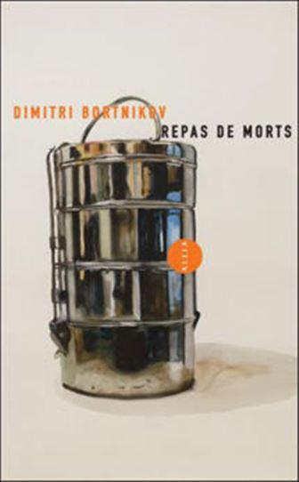
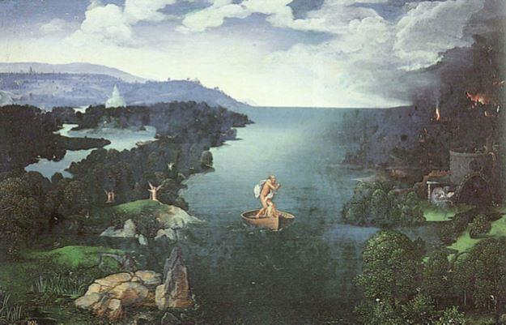
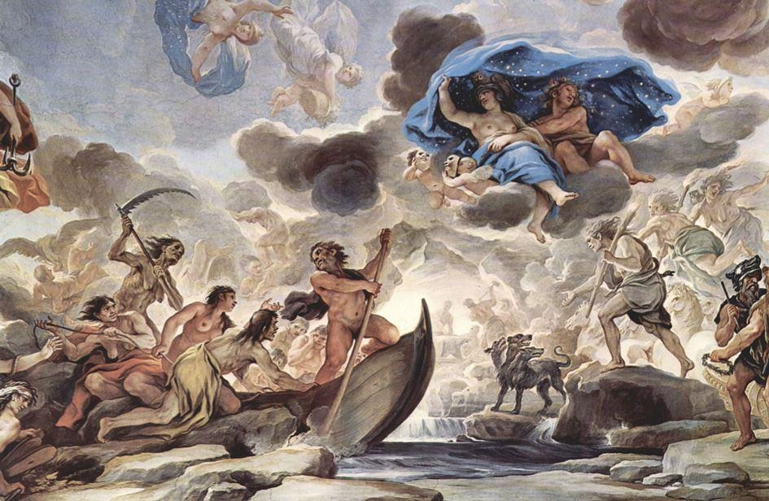

Sur la table littéraire de « cette vieille chienne d’Europe », dans sa chambre « à deux pas du Père-Lachaise », un homme « soulève le couvercle » puis, lentement, mot par mot, en langue française, déguste ses morts. Mère, grand-mère, père, tante, soldats, tous. Ce repas, qui est autant un prétexte à la réminiscence qu’une occasion de se repaître sera sans aucun doute l'une des plus heureuses surprises de cette rentrée.
Repas de morts, le premier roman écrit en français par Dimitri Bortnikov, se déplie à partir d’un centre ambitieux, au cœur-même de l’intelligence de son narrateur, dont ne s’évade que très rarement la conscience de la mort. En quatre parties, le lecteur chausse donc l’esprit finement torturé de Dim, l’immigré déclassé venu des steppes, là où s’ennuya si douloureusement durant des siècles l’âme russe.
L’histoire en arrière-plan, tout d’abord. La lointaine, celle de ces yakoutes « christianisés par force » (p64), de ces cosaques de Pougatchev, maté par Souvorov et Catherine II : « Il sera traquenardé Pougatchev. Dans la steppe – attrapé ». Quand on est trahi – elle est petite la grande steppe… Amené dans une cage auprès de Catherine II, il sera silencieux. Ce sera long… Ils lui couperont les oreilles. Puis les bras. Puis – les jambes. Les yeux dans les yeux ils étaient, comme disent les témoins.
Elle n’a pas quitté ses yeux jusqu’à ce qu’il s’éteigne. Il mourra silencieux, cosaque. » (p 35). Celle d’Octobre, ensuite, qui l’a, dit-il non sans humour, « laissé dans le rouge » :
Je suis dans le rouge. C’est énervant… Je suis dans la misère. Comme toujours, je cherche un cinquième coin. Quand je pense à mon arrière-grand-mère paternelle … Eudoxie…. Elle avait des domestiques ! Elle se mélangeait pas au peuple… Pas du tout et puis la Révolution ! L’Octobre les a tous touillés : » (p 63)
La sienne ensuite, l’expédition à Tiksi, sur la mer Laptev, « le Styx glacé », la solitude parmi les soldats :
« C’est là-bas, au pôle Nord que j’ai commencé à gribouiller… Après tout ça… On a tous vu la mort danser dans la neige… Elle nous invitait un par un.

Charon traversant le Styx, par Joachim Patinir, vers 1520
Un après l’autre, voilà encore un, puis encore un autre…Les gars tombaient… S’allongeaient… Tout ça… Si irréel. Je notais leur prénom, simplement les prénoms et puis comment on les avait retrouvés. La mort, j’ai tenu son carnet de bal. » (p111)
Et puis Paris, enfin la solitude à nouveau après la séparation d’avec sa femme et son fils, la solitude parmi les citadins :
« Droit à rien, je demande rien à personne. Du tout. J’essaie d’exister moins qu’un chat errant (...) Qui je suis, personne. Mais c’est comme ça… En aparté ». (126)

La barque de Charon fait traverser le Styx (ou l'Achéron) aux morts qui entrent dans les Enfers, fresque de Luca Giordano, 1685, Florence.
Si un fil conducteur parvient à coudre ces tableaux entre eux, c’est bien toujours la conscience de la mort de celui qui les raconte, et qui sourd de chacun d’entre eux sans qu’on sache si ça fait du mal ou du bien. Elle est si présente dans le cours de son existence que tenter de la fuir, de lui échapper, demeurerait grotesque, et suicidaire.
Une telle occasion ne se présente que par instants, fugaces :
« J’ai commencé à oublier mes morts. Visage par visage. Malheur par malheur. D’une agonie à l’autre, je les ai tous oubliés. » (p 78).
L’amour, alors. Quelques instants de bonheur, de transe. Mais en matière de lucidité, de réalité, le sexe n’arrive jamais à la hauteur de la mort. Le sexe ne nourrit l’être qu’occasionnellement, et ne donne jamais matière à naître :
« On était nés on était vivants et – on voulait naître et naître. Là sous le ciel les jambes écartées, gueulant les oreilles bouchées de plaisir – s’oublier et naître. » (p 101)
Mais le sexe n’est pas suffisamment constant pour fonder à soi seul l’objet d’une quête. Tandis que la mort :
« Toute la vie on cherche... Quelqu'un. Qui nous vivra après. Qui après notre mort recueillera notre âme. Quelqu'un devant qui t'as pas honte de crever. Quelqu'un à qui tu feras confiance quand il te murmurera - t'es mort. » (p 179)
La mort, c'est le point fixe autour duquel s'organise le chaos des réminiscences, le fil conducteur de toute une existence.
Repas de morts est un récit ambitieux, exigeant, ardu, qui possède une véritable gueule sur le plan stylistique J’ai souvent pensé à Céline, le Destouches dernière façon, celui qui d’une exclamation à une autre mêlait les voix de ses hôtes en un même ça, tout en cherchant à coller au plus près d’une parole que le lecteur entendrait, battant une cadence qui s’évaporerait dans ses fameux points de suspension :
Faucon ! O mon fauconnet… Piou… Piou ! Tu m’appelles. Petit oiseau du midi. Mon fauconnet aveuglé… Piou piou il me crie. Sauve-toi ! Cache-toi vite ! Pars dans l’ombre ! Mais il n’y en a pas ! T’es perdu… Perdu… (p 33)
La mort, père… Quel chagrin… Ton fils n’aura pas d’argent pour t’enterrer… Ils murmurent tes copains… Susurrent « Ça roule pas tu vois… Ça coule pas du tout. Ton fils. On le connait bien. Mais pourquoi ? Ah ? Pourquoi… Qu’est-ce qui se passe ? Vit en France lui… Ecrit lui. Des livres ! Et son père ! Meurt seul… Ça colle pas du tout. (p 37)
Par ailleurs, est-ce le statut de solitaire et d’exilé dont jouit à Paris son auteur ? Difficile de ne pas évoquer aussi Beckett, honorant lui aussi de sa vive peine un français langue étrangère, nous invitant sur ses pas à revisiter notre syntaxe.
Comme la lecture de Molloy ou de Malone meurt, la lecture du repas des Morts est une sorte d’épreuve – au sens noble, s’entend. Bortnikov lui aussi parle au présent mythologique. De Beckett, il reprend un certain nombre de thèmes. La solitude, d’abord :
« Si t’es pauvre, il faut apprendre les petites choses. Un pauvre doit être léger. Léger… Se contenter de très peu. Il faut être seul. » (p 144).
Une certaine infirmité à être, également. Pour ne pas dire une volonté de ne pas être :
« Je me traîne. Suis devenu un pauvre kéké. Je me dis bientôt tu vas partir d’ici. Mais rien n’est bientôt. » (p 161).
Comme chez Beckett, une façon de laisser entendre certaines courbes d’un français découvert sur le tard, un français culturel, un soliloque mythologique :
« Là je suis seul. Là sur ce pont qui est si léger de tous nos sourires. Seul moi, fils. Lourd moi. Il peut d’effondrer ce pont. Que le soleil parte lui aussi. Que tout parte, Ourson ! Tout ! Pas de force pour sortir les mains des poches. Sauter de ce pont, oui, comme ça, les mains dans les poches. Peut-être tout, toute la vie, ma vie… n’être que la route vers ce pont. Vers ce saut et là tout sera accompli ? Là tout sera fini. Fini pour de bon, fils ? » (p 168)
« Ma vie, ma vie, tantôt j’en parle comme d’une chose finie, tantôt comme d’une plaisanterie qui dure encore, et j’ai tort, car elle est finie et elle dure encore, mais par quel temps du verbe exprimer cela ? » se demandait le Molloy de Beckett. « Mon présent n’a plus de survivants », dit Bortnikov, comme si l’absurde avait cessé d’être une expérience individuelle et littéraire, une expérience construite, avait cessé d’être aussi contraignant et abstrait pour adopter les contours du destin de tous, devenir le lot d’un quotidien qui serait lui-même devenu évident :
« Ils sont tous morts, les hommes, les femmes de mon enfance. Les chiens aussi. Tous, mon sang. Tous. » (p. 171). Et de conclure, in fine : « Personne ne peut me sauver. Tous ceux que j’aimais devenu nœud coulant pour moi » (182)
Il faut déguster lentement ce Repas de morts, au contraire de Beckett, si douloureusement sentimental, et tout comme lui pourtant, si joyeusement expérimental dans le paysage de cette rentrée où tant et tant d’autres écrivains se bousculent et n’ont pourtant à nous raconter que de palotes et convenues intrigues de vivants.
Partager cette page